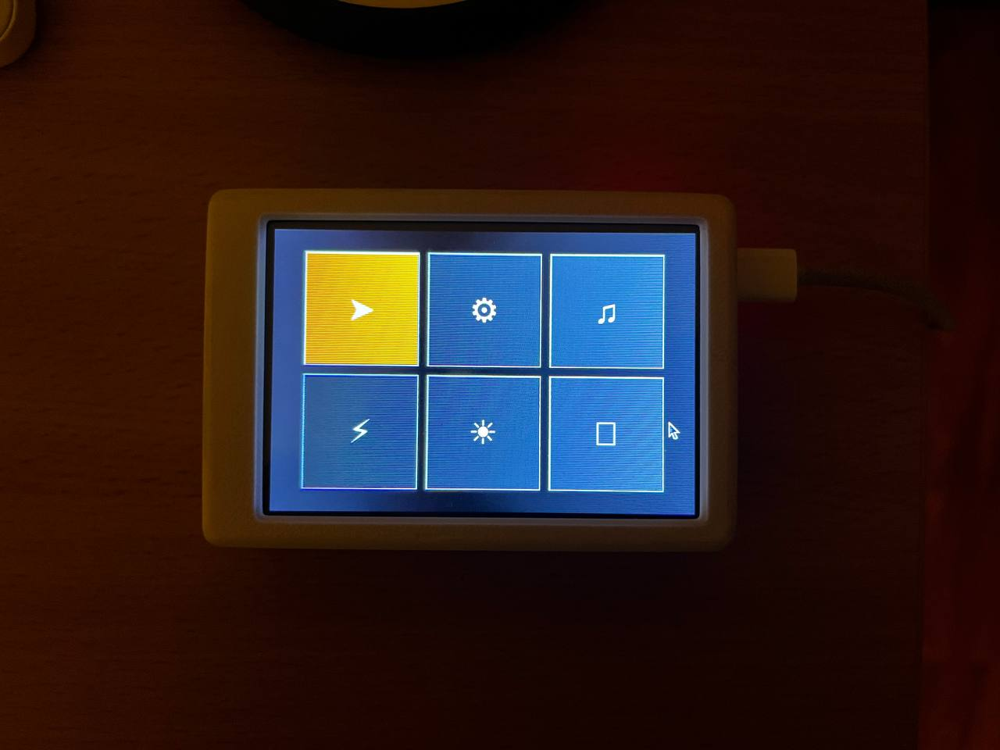
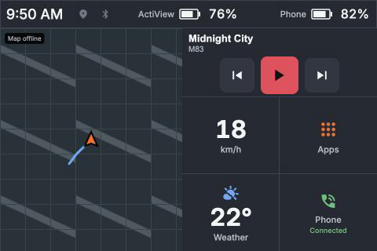
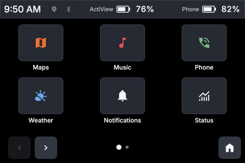
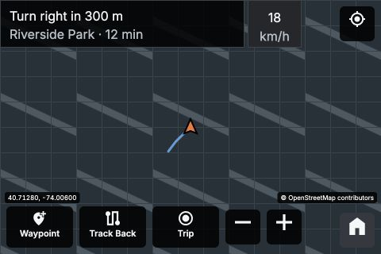
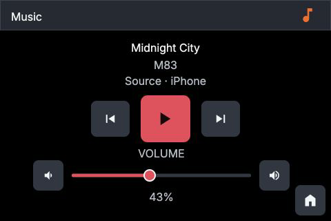
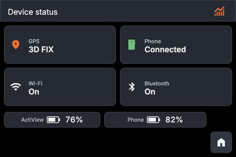
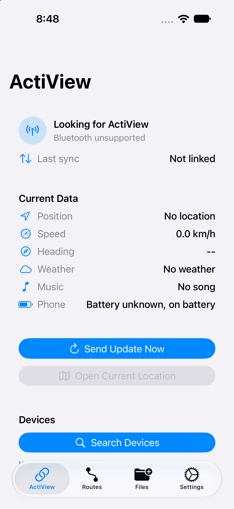
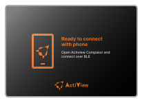
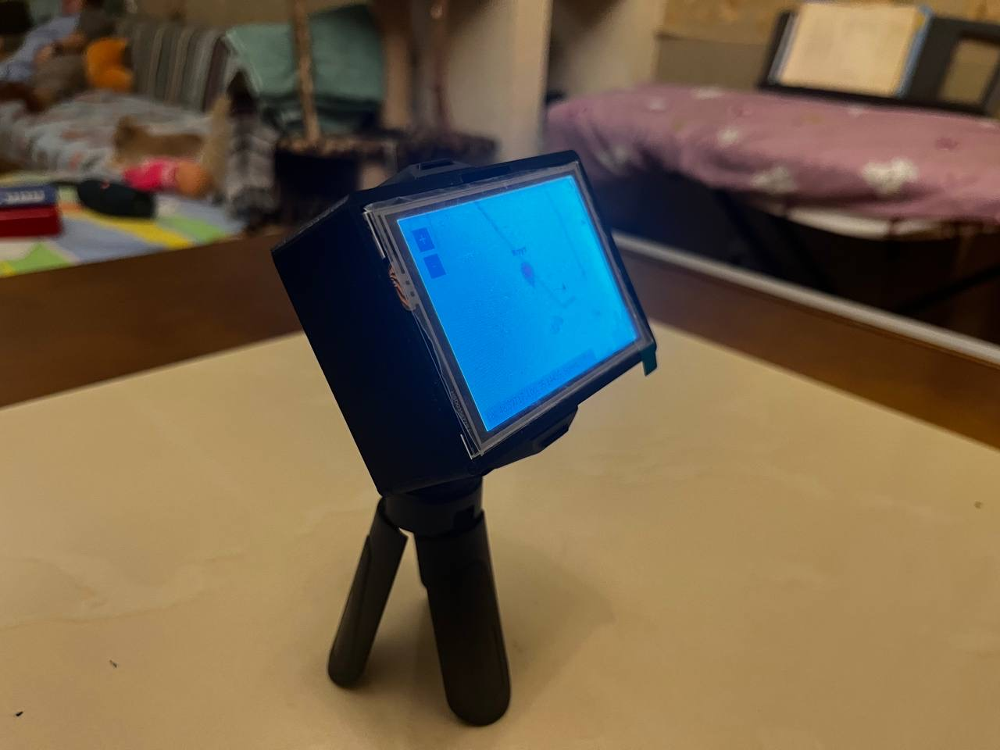
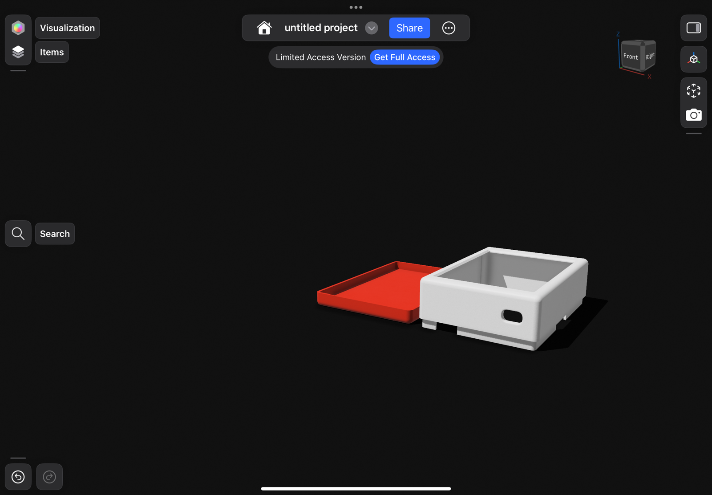

The useful part of your phone, where you can see it.
ActiView is a compact external display for kayaking, cycling, and other situations where phone information matters but handling the phone does not.

A wet phone turned into a hardware question.
I started ActiView after moisture damaged my phone during a kayaking trip. I wanted a small, affordable screen that could keep navigation and other useful information visible while the phone stayed protected.
The first answer was practical: a Raspberry Pi, a small Waveshare display, a custom interface, and a 3D-printed case. Since then I have been working toward something more complete—a clearer interface, a companion iPhone app, and hardware designed around outdoor use instead of assembled around development boards.


More information. Less interface around it.
The newest design uses the 480 × 320 display more carefully: a compact status row, a map that takes real space, restrained controls, and explicit unavailable states instead of convincing-looking placeholder data.
These are authentic exports from the current ActiView Studio project. Studio uses the same browser runtime intended for a future device deployment, but this design has not yet been verified as the exact UI installed on the physical Pi.




Implemented in the design/runtime: 12- and 24-hour time choices, two launcher pages, map and route states, music controls, phone and device status, weather, trip recording, waypoints, settings, and clear missing-data states.
Still being validated: dependable field location updates, responsive phone-to-display media control, reconnection behavior, and deployment of the new Studio runtime on the physical device.
The phone now has its own side of ActiView.
The SwiftUI companion app scans for a nearby ActiView over Bluetooth, connects to its service, and prepares phone data for the display. The current code covers location, weather, music state and controls, phone status, routes, and Wi-Fi transfer for larger files.
The app declares Bluetooth and location background modes, but iOS still controls when background work may run. Completely hands-off pairing and unrestricted background transfer are not being claimed here.


From development boards toward one outdoor device.
The working prototype proves the basic shape of the idea. The next hardware work is about making it thinner, stronger, easier to control with wet hands, and less dependent on a stack of separate boards.


What exists
- Raspberry Pi prototype and small Waveshare display
- Custom interface and phone-to-device communication code
- Multiple printed enclosure and STL iterations
- BLE for live packets and Wi-Fi HTTP for routes and map files
What I am exploring next
- A thinner, outdoor-readable display with a compact connection
- Two water-resistant buttons and a Hall-effect magnetic touch lock
- A custom carrier PCB or Compute Module-based assembly
- Integrated battery management and possible wireless charging
- An optional handlebar or paddle remote
- NFC as a shortcut into the normal app pairing flow
These are development directions, not completed production hardware. No final display, custom PCB, remote, charging system, waterproof rating, or battery-life figure has been selected or verified.
From working prototype to outdoor-ready device.
The next phase is about proving the complete experience on real hardware before making the enclosure smaller or calling the product finished.
-
01
Integrate
Run the current Studio interface on the physical Raspberry Pi and verify the display and touch behavior.
-
02
Test outdoors
Field-test phone reconnection, location updates, maps, and media controls while kayaking and cycling.
-
03
Rebuild the hardware
Move beyond the first electronics in a printed case toward a thinner enclosure, compact electronics, and water-resistant controls.
A real prototype, becoming a product system.
ActiView is not a finished product. It is a working hardware experiment, a substantial Raspberry Pi software project, a current 21-screen interface design, and a buildable iPhone companion app.
The next useful milestone is integration: run the newer interface on the physical device, test the phone link away from a desk, and learn which hardware changes matter outdoors. That is more important than pretending the concept is already done.
Talk with me about ActiView →